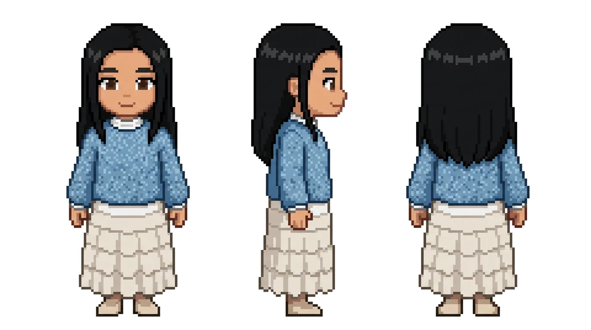
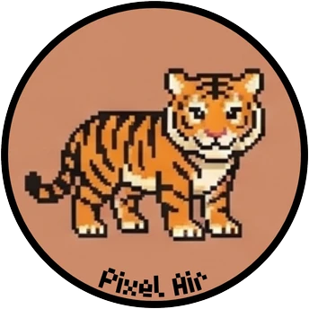
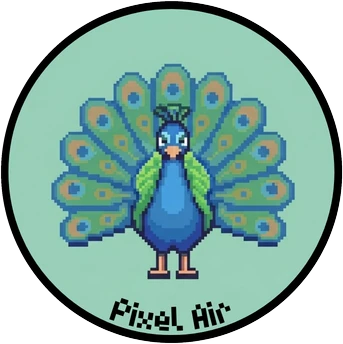
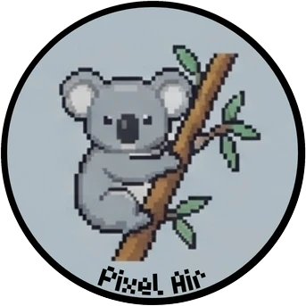
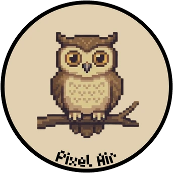
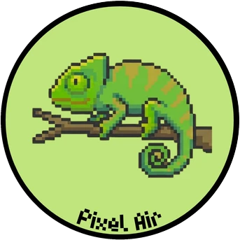

連線穩定性是最大的問題
84 次斷線事件、「沒有卡住或斷線」只有 2.77 分。伺服器在 40 人時 CPU 只用約 9%，問題較可能在擁擠的校園 Wi-Fi。下一場改用自備 5 GHz 路由器並壓縮同步訊息。
01 · ORIGIN
迎新、教育訓練、共識營……人在同一個空間，不代表心理上有連結。常見做法是「禁止」：要大家收起手機。但這違反現代人的習慣，而硬性的破冰活動本身也不受歡迎。我們換一個方向：轉譯，而非禁止。
2024 年臺灣民眾行動寬頻普及率台灣網路資訊中心，2024
聽到公司要辦團建時，最常見的反應是「害怕」YouGov，Smith，2022
「我需要與他人認識的契機」vs「開口搭話對我很容易」本組實測前測，n = 25，五點量表
為什麼在迎新時滑手機？前測裡參與者這樣說：
有些時間比較尷尬 沒人聊天 空檔很多就會開手機 不喜歡社交多數人並不排斥認識別人，缺的是開口的理由。
02 · SYSTEM
點一下各個節點，看它負責什麼。生成服務只綁本機位址，由互動層代理轉發，外部無法直接呼叫付費的生成端點。

← 拖曳轉身 → 模型一次畫出三視圖，角色依移動方向切換面向
⚠ 掃描失敗一律降級：相機權限被拒、照片不合格時，停在失敗頁讓你重拍、從相簿選或自訂角色；生成本身掛了，直接帶去自訂角色。
03 · PLAY
每個角色的速度由手動輸入與 Boids 群體演算法依權重 α 混合。推搖桿時 α 在 0.3 秒內升到 1，你立刻感到回應；放手滿 3 秒後，α 以 1.2 秒的餘弦曲線降回 0，把角色交還給群體。下面就是同一套規則，你控制的是頭上有紅色箭頭的那個角色。
04 · GAMES
主辦端從「節目單」依場合套用範本。翻開卡片，看每個玩法「為什麼需要開口」。
MINI GAME
生成角色要等十幾秒，系統就用這段時間問你幾題。類型從外表看不出來——想找同類，只能開口問。





05 · RESULTS
25 位大學部學生簽署同意書並完成前後測問卷。大螢幕使用共享辦公室場景，流程依序為人物賓果、找同類配對、文字雲與集體大合照。
手機使用頻率前測問「過去的迎新活動」、後測問「今天的活動」，情境不同，僅供參考；本實測無對照組。
回饋問卷五構面N = 26・五點量表・點一下展開題目
開放題裡，參與者寫道：
可以跟很多人開口講話 一群人開始詢問是什麼動物 連我衣服上的字都印出來了 知道別人咖哩拌不拌 還是需要一點勇氣84 次斷線事件、「沒有卡住或斷線」只有 2.77 分。伺服器在 40 人時 CPU 只用約 9%，問題較可能在擁擠的校園 Wi-Fi。下一場改用自備 5 GHz 路由器並壓縮同步訊息。
「很好玩」4.38 分，「任務幫我認識了現場的人」3.23 分。配對與賓果只交換一組號碼，屬於很淺的互賴；自我介紹題交換的是個人資訊，才比較能延伸成對話。
自評不擅長開口的 13 人，社交效果題平均低約 1 分。未來設計「先在手機上回應、再當面確認」的漸進式任務，讓互動從被評價風險較低的媒介開始。
06 · TEAM
國立臺灣師範大學 科技應用與人力資源發展學系
點一下角色打個招呼。
指導老師
林坤誼
TEAM PHOTO
本人 vs. 像素版
由左至右：廖振廷、周庭伊、巫冠儀、康恩瑋、劉澤文。上面的像素角色，就是我們自己的系統從這樣的照片轉譯出來的樣子。
BUILT WITH
Node.js + ws Python + Flask MediaPipe OpenCV Gemini 影像模型 Canvas2D Three.js Pillow SQLite